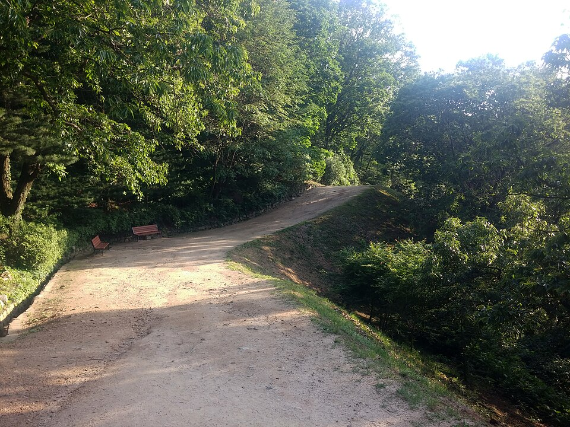

고양 덕양구는 관리 중인 중·고등학교만 37곳입니다. 행신고등학교·화정고등학교·무원고등학교·능곡고등학교 같은 고등학교와 행신중학교·화정중학교·원흥중학교·지축중학교가 구 안에 흩어져 있습니다. 화정·행신 쪽 오래된 단지와 삼송·지축·원흥 쪽 새 단지는 같은 구라도 오가는 데 시간이 걸려서, 저녁이 이동으로 묶이는 학생은 집으로 오는 1:1 중등 국어과외나 고등 수학과외를 따로 찾게 됩니다.
오늘은 덕양구로 직접 찾아가는 선생님들 가운데 과목과 방문 동네가 다른 두 분을 소개합니다. 한 분은 초등부터 고3까지 국어를 맡는 선생님, 한 분은 초4부터 고등까지 수학을 맡는 선생님입니다.
덕양구에서 중등 국어과외 상담이 들어오는 이유는 대개 점수가 아니라 태도입니다. 지문을 읽기는 읽는데 무엇을 읽었는지 말로 못 하는 상태입니다. 이 선생님은 설명을 한 방향으로 길게 하지 않고, 학생의 반응을 보며 속도와 깊이를 그 자리에서 조절하는 방식으로 진행합니다. 국어교육과를 졸업해 교과 내용과 서술형 답안을 같은 기준으로 봅니다.
수업 밖 관리도 자세한 편입니다. 학생과 학부모님이 함께 있는 대화방으로 그날 무엇을 했는지 공유하고, 온라인 자습 관리와 수행평가 준비를 함께 봅니다. 초등부터 고3까지 지도 범위가 넓어, 형제가 학년이 다른 경우에도 한 선생님과 이어 갈 수 있습니다. 방문 동네는 삼송동·지축동·신원동·고양동 쪽이고 화상 수업도 가능합니다.
백ㅇ민 선생님 상세 프로필 →덕양구에서 고등 수학과외를 찾는 시점은 대개 진도를 놓친 뒤입니다. 앞 단원이 비어 있는데 수업은 다음 단원으로 가 있는 상태입니다. 이 선생님은 중하위권 학생의 이해 속도에 맞춰 풀이를 잘게 나눠 보여주는 방식으로 진행하고, 내신 범위를 기준으로 관리합니다. 쪽지로 빠르게 소통하고 짧은 테스트를 자주 넣어, 아는 줄 알았던 단원을 그때그때 확인합니다.
지도 범위는 초등 4학년부터입니다. 고2·고3은 학생의 학습 준비 상황에 따라 가능하다고 안내되어 있으니 상담 때 확인하시는 편이 정확합니다. 방문 동네는 원흥동·주교동·행신동이고, 일산동구 식사동·중산동도 방문합니다. 덕양구와 일산동구를 함께 다니기 때문에 이사나 전학으로 동네가 바뀌어도 이어 갈 수 있습니다.
한ㅇ규 선생님 상세 프로필 →학교마다 진도와 시험 범위가 달라서, 학교별로 준비법을 따로 정리해 두었습니다.
👉 덕양구 국어과외 선생님 · 덕양구 수학과외 선생님 · 덕양구 관리 학교 전체 보기